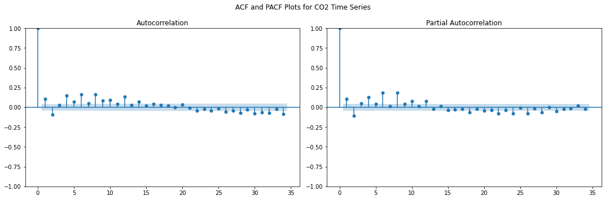

Gaussian Process Regression uses kernels to define how data points are related. Here we’re creating a sophisticated kernel that captures different aspects of CO2 data.
Long-term trend kernel: Captures slow, gradual changes in CO2 levels
In a Jupyter environment, please rerun this cell to show the HTML representation or trust the notebook. On GitHub, the HTML representation is unable to render, please try loading this page with nbviewer.org.
# Step 6. Make predictions# Calculating the last timestamp in your data as "year + fractional month"last_timestamp = df_CO2_monthly.index.max()last_year_fractional = last_timestamp.year + last_timestamp.month /12X_test = np.linspace(start=last_year_fractional, stop=last_year_fractional +10, num=1_000).reshape(-1, 1)# Making the predictionsmean_y_pred, std_y_pred = gaussian_process.predict(X_test, return_std=True)mean_y_pred += y_mean
We create 1,000 prediction points spanning the next 10 years.
predict() returns both the predicted mean and the standard deviation. The standard deviation represents the model’s uncertainty at each point. We add back the mean to convert predictions to absolute CO2 levels for the next 10 years.
Code
plt.figure(figsize=(16, 5))plt.plot(X, y, color="darkblue", linestyle="-", label="Measurements")plt.plot(X_test, mean_y_pred, linestyle="dashed", color="darkred", alpha=0.9, label="Gaussian process - predictions")plt.fill_between( X_test.ravel(), mean_y_pred - std_y_pred, mean_y_pred + std_y_pred, color="tab:red", alpha=0.4,)plt.grid( color="gray", linestyle="--", linewidth=0.5, alpha=0.7)plt.legend()plt.xlabel("Year")plt.ylabel("Monthly average of CO$_2$ concentration (ppm)")_ = plt.title("CO2 level predictions for the next 10 years at Mauna Loa Observatory")
6 2. Short-Medium Model - predictions 1 month ahead
7SarimaX
Code
# Load and prepare the datasetdata = df_combined_inner.copy()co2_series = data['median_CO2'] # for such a short timeframe we don't really need all the features
Code
# Step 1: Preprocess the dataco2_cleaned = co2_series.interpolate()co2_diff = co2_cleaned.diff().dropna() # Differencing to remove trends
diff() calculates the difference between consecutive observations.
Differencing helps to:
Remove underlying trends
Stabilize the variance
Make the time series more stationary (a key assumption for SARIMA models)
Code
# Step 2: ACF and PACF for diagnosticsfig, (ax1, ax2) = plt.subplots(1, 2, figsize=(15, 5))plot_acf(co2_diff, ax=ax1)plot_pacf(co2_diff, ax=ax2)plt.suptitle('ACF and PACF Plots for CO2 Time Series')plt.tight_layout()plt.show()

ACF (Autocorrelation Function): Shows correlation between a series and its lagged versions
PACF (Partial Autocorrelation Function): Shows direct correlation between observations at different time lags
These plots help determine the appropriate parameters for the SARIMA model
Significant spikes indicate potential autoregressive (p) and moving average (q) terms
# Step 2. Add other columns as regressorsother_columns = ['temperature', 'humidity', 'dew_point', 'precipitation', 'pressure','evapotranspiration', 'wind_speed', 'soil_temperature','median_CH4' ] # excluding SF6 and N2O to avoid noisefor column in other_columns: prophet_df[column] = data[column]
External regressors allow the model to incorporate additional contextual information. These can improve forecast accuracy by capturing broader environmental behaviours.
# Extend regressors into the futurefor column in other_columns: future[column] = data[column].iloc[-1] # Use the last known value as a constantforecast = model.predict(future)
We generate a dataframe with forecasts for the next 5 years (1,825 days).
model.predict() generates: - Point forecasts (yhat) - Upper and lower confidence intervals
Code
# Step 5. Visualize the Forecastplt.figure(figsize=(16, 8))fig = model.plot(forecast)plt.title('5-Year CO2 Level Forecast at Mauna Loa Observatory', fontsize=16)plt.xlabel('Year', fontsize=12)plt.ylabel('CO2 Levels', fontsize=12)plt.grid(True, linestyle='--', alpha=0.7)plt.show()
<Figure size 1152x576 with 0 Axes>
Code
# Analyze Forecast Summaryforecast_summary = {'First Predicted Value': forecast['yhat'].iloc[0],'Final Predicted Value': forecast['yhat'].iloc[-1],'Difference between first and last predicted value': forecast['yhat'].iloc[-1] - forecast['yhat'].iloc[0]}print("Forecast Summary:")for key, value in forecast_summary.items():print(f"{key}: {value}")
Forecast Summary:
First Predicted Value: 368.1596018006747
Final Predicted Value: 429.94159020617053
Difference between first and last predicted value: 61.78198840549584
10 4. Long term Model - predictions 20+ years ahead
In a Jupyter environment, please rerun this cell to show the HTML representation or trust the notebook. On GitHub, the HTML representation is unable to render, please try loading this page with nbviewer.org.